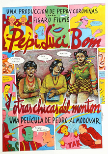

Pedro Almodóvar
1980
82 minutes
This is Almodóvar's first film, so naturally it is utterly bonkers. It's also secretly one of his more poignant ones in some ways, at least thematically. The plot is outrageous and shamelessly bizarre. This stars Almodóvar regular Carmen Maura as the Pepi from the title.
The film starts with a scumbag police officer who spots Pepi's marijuana plants and then gives her a choice between being raped or arrested. She opts for the former, which robs her of her technical virginity. Understandably humiliated and angry, she swears revenge. We're also quickly introduced to Bom, a female punk rocker. Bom's friends are enlisted to beat the shit out of the policeman, but due to a misunderstanding they accidentally beat up the policeman's twin brother instead, because of course they do. This is that kind of film.
Pepi also ends up befriending the cop's neglected wife, Luci, rounding out the titular trio, under the guise of getting knitting lessons from her. Again, it's Almodóvar playing with his punked-out messy Barbie dolls, just go with it. Pepi all-too-quickly figures out that Luci is rather sexually submissive and, hilariously, into water sports, so she pisses on her face in a scene best described as "boy that escalated quickly". And from then on we have a trio of friends forged in hot bodily fluids. Further shenanigans involve dragging Luci to punk shows, judging a big dick contest, wearing some delightful fashions, starting an underground press and other debauchery.
Eventually Luci's abusive policeman husband catches up with her and beats the shit out of her. The rather submissive Luci decides that this is exactly the sadism that she was missing from her life and gets back together with him and abandons her friends to go back to his comfortable domestic abuse. Pepi and Bom deepen their friendship for a surprisngly bittersweet end to the story.
You've known enough abused women where this cockamamie logic isn't completely alien or unrealistic, unfortunately. As stupid as the sexual aspect of the story is, where the woman feels neglected until "he hit me and it felt like a kiss", the fact is that this seems to happen all the time in real life. It's sadly realistic for anyone who has dealt with the alien logic of how abuse and abusers work. Nearly every woman you've known who has escaped her abuser temporarily has either beelined back for more or sought out someone else who would immediately be an equal or greater problem for them. That's not a matter of victim blaming, but just a sad acknowledgment that getting out of a domestic abuse situation is only half the issue. Without treating the core issues that make them that way, prey will remain prey. Even if by some miracle they don't return to their original abusers, other predators have a way of sniffing them out once they've wriggled out of someone else's grasp. You've seen too many examples of this firsthand, but those stories aren't yours to share.
For now, laugh at the watersports and the big dick contests (which are complex enough where length is multiplied by girth for ultimate scientific legitimacy) and don't think too hard about the victimization parts.
Time to choose something different: